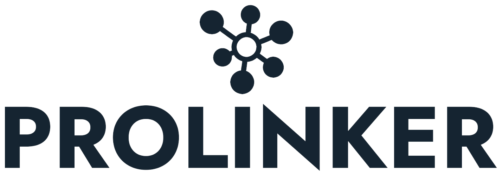

{{ t.scanTitle }}
{{ scanSubtitle }}
{{ checkEl }}
{{ st.label }}
{{ t.resultsFor }} "{{ query }}"
←{{ t.editPost }}
{{ metaLine }}
{{ selectedLabel }}
{{ r.initials }}
{{ r.starsEl }}
{{ r.availLabel }}
{{ r.availDateLine }}
{{ t.relevance }}: {{ r.relevanceStr }}
{{ matchSparkEl }}{{ t.loadingMore }}
{{ t.related }}
{{ p.initials }}
{{ p.name }}
{{ p.starsEl }}
{{ t.mBranche }}{{ p.branche }}
{{ t.mLocation }}{{ p.location }}
{{ t.mAvail }}{{ p.hours }}
{{ t.mSkills }}{{ sk }}
{{ para }}
{{ t.mEmpty }}
{{ t.mRatings }}
{{ cr.label }}
{{ cr.starsEl }}